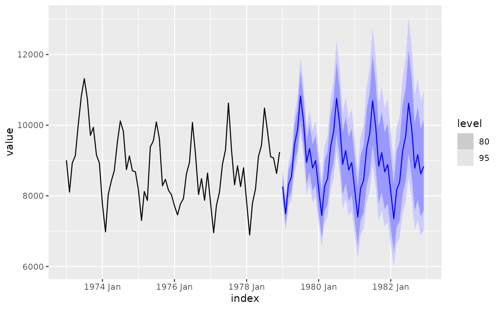

The theta method of Assimakopoulos and Nikolopoulos (2000) is equivalent to simple exponential smoothing with drift. This is demonstrated in Hyndman and Billah (2003).
THETA(formula, ...)Model specification.
Not used.
A model specification.
The series is tested for seasonality using the test outlined in A&N. If deemed seasonal, the series is seasonally adjusted using a classical multiplicative decomposition before applying the theta method. The resulting forecasts are then reseasonalized.
More general theta methods are available in the forecTheta package.
The season special is used to specify the parameters of the seasonal adjustment via classical decomposition.
season(period = NULL, method = c("multiplicative", "additive"))period | The periodic nature of the seasonality. This can be either a number indicating the number of observations in each seasonal period, or text to indicate the duration of the seasonal window (for example, annual seasonality would be "1 year"). |
method | The type of classical decomposition to apply. The original Theta method always used multiplicative seasonal decomposition, and so this is the default. |
Assimakopoulos, V. and Nikolopoulos, K. (2000). The theta model: a decomposition approach to forecasting. International Journal of Forecasting 16, 521-530.
Hyndman, R.J., and Billah, B. (2003) Unmasking the Theta method. International J. Forecasting, 19, 287-290.
# Theta method with transform
deaths <- as_tsibble(USAccDeaths)
deaths %>%
model(theta = THETA(log(value))) %>%
forecast(h = "4 years") %>%
autoplot(deaths)

# Compare seasonal specifications
library(tsibbledata)
#> Error in library(tsibbledata): there is no package called ‘tsibbledata’
library(dplyr)
aus_retail %>%
filter(Industry == "Clothing retailing") %>%
model(theta_multiplicative = THETA(Turnover ~ season(method = "multiplicative")),
theta_additive = THETA(Turnover ~ season(method = "additive"))) %>%
accuracy()
#> Error in eval(expr, envir, enclos): object 'aus_retail' not found